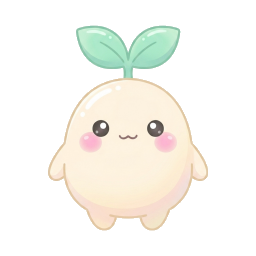
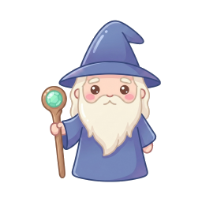
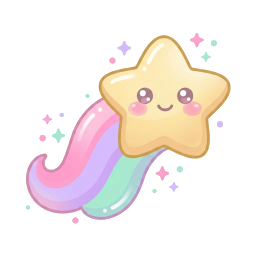
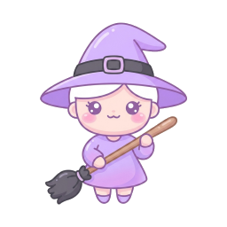

ENGLISH WORD MATCH
えいごのおかしの国
OKASHI NO KUNI
小学中学高校大学・TOEIC


はじめる
🔊📕⚙
小学生から 大学生まで ／ 収録 7,200語
🎒 コースを 選ぶ
✕
学年は 目安です。どのコースも いつでも 選べます。
むずかしければ 1つ 下、やさしければ 1つ 上へ。

小学生コース
英検5〜4級 ／ 600語 ／ 全20ウェーブ
600 / 600語 ・ クリア ✓
★☆☆☆
中学生コース
英検4〜3級 ／ 1,200語 ／ 全40ウェーブ
1,200 / 1,200語 ・ クリア ✓
★★☆☆

高校生コース
英検準2〜2級・共通テスト ／ 2,400語
1,824 / 2,400語
★★★☆

大学生・社会人コース
TOEIC・英検準1級・学術語 ／ 3,000語
360 / 3,000語 ・ 現在地 ウェーブ42
★★★★

総復習（ミックス）
4コース 7,200語から ランダム出題
覚えた語 2,448 / 7,200語
全レベル

どこから 始めるか 迷ったら 30秒の レベル判定。
10問 答えると、ちょうどの ウェーブから 始められます。
🧪 レベル判定を する（30秒）
このコースで 始める ▶
ウェーブ
1
どうぶつ
正解
2/4
ミス 0
スコア
⭐ 240
連続 ×2
WAVE 1
どうぶつの もり
 ねこ
ねこbear
 ぶた
ぶたcat
くまowl
ふくろうpig
ぶた だね！
おなじ いみの えいごを タップしてね
🔊発音
ON
ON
💡ヒント
残り2
残り2
🌈道のり
⏸一時停止
ウェーブ
42
大学・社会人
正解
2/6
ミス 1
スコア
⭐ 1,240
連続 ×2
WAVE 42
TOEIC 頻出 600語
形significant/sɪɡˈnɪfɪkənt/
締め切り
動negotiate/nɪˈɡoʊʃieɪt/
重要な
名deadline/ˈdedlaɪn/
仮説
副approximately/əˈprɑksɪmətli/
交渉する
形sufficient/səˈfɪʃnt/
およそ
名hypothesis/haɪˈpɑθəsɪs/
十分な
連続 ×2！ いい 調子。
間違えた 語は 今日の 終わりに もう一度 出ます
🔊発音
ON
ON
💡ヒント
残り2
残り2
📄例文
⏸一時停止
ウェーブ
1
どうぶつ
正解
3/4
ミス 0
スコア
⭐ 340
連続 ×3
WAVE 1どうぶつの もり
正解！ ⭐+100
pig
/pɪɡ/ ・ ピッグ
ぶた
♪
♪ もういちど
つぎへ ▶
発音は 下の ボタンで いつでも オフに できます
ウェーブ
42
大学・社会人
正解
3/6
ミス 1
スコア
⭐ 1,420
連続 ×3
WAVE 42TOEIC 頻出 600語
正解！ ⭐+180
negotiate
/nɪˈɡoʊʃieɪt/
交渉する
♪
They will negotiate a new contract next week.
彼らは 来週 新しい 契約を 交渉する。
♪ もういちど
次へ ▶
カタカナ表記は 設定で 出せます（初級は 最初から ON）
ウェーブ1 クリア！
✨ 全問正解 ✨
正解4/4
時間0:32
ミス0
⭐ +480🍬 おかし ×1
次の ウェーブ
WAVE 2 ・ たべものの まき
cakemilkeggapple+1
単語が 1つ 増えて、少し 長く なります
次の ウェーブへ ▶
今日は ここまで
🌈 ウェーブの 道のり
✕
★★★★
大学生・社会人コース
60ウェーブ ／ 3,000語
38
ビジネスの 動詞
negotiate・submit・approve
★★★☆☆
クリア ✓
39
契約と 取引
contract・invoice・refund
★★★☆☆
クリア ✓
40
会議と 日程
agenda・postpone・attend
★★★☆☆
クリア ✓
41
数量と 概算
approximately・estimate
★★★★☆
クリア ✓
42
TOEIC 頻出 600語
significant・negotiate・deadline
★★★★☆
現在地
43
論文の ことば
hypothesis・empirical・derive
★★★★☆
🔒
44
抽象名詞
consequence・tendency・norm
★★★★★
🔒
45
まとめテスト（40語）
39〜44ウェーブから 出ます
★★★★★
🏁
∞
この先も 続きます
60ウェーブの あとは 総復習（ミックス）へ
進むほど 語が 長く・数が 多く なります。
間違えた 単語は 日を おいて もう一度 出ます。
🔁 間違えた 単語だけ 復習する
🔊 音と 表示の 設定
✕
🔊
発音を 鳴らす
正解のとき 英語を 読み上げます
🔁
2回 繰り返す
ゆっくり → 普通 の 2回
🐢読み上げの 速さゆっくり ×0.8
×0.5×0.8×1.2
🎵
BGM
おかしの国の 静かな曲
🔔
効果音
タップ・正解・ミス
📳
振動
iPhone では 動きません
🔤
出題の 向き
どちらから 出すか
日→英英→日ミックス
🅰
発音記号を 表示
/ˈsɪɡnɪfɪkənt/ のように 出す
🔡
カタカナ表記
小学生コースは 最初から ON
📄
例文を 表示
正解のとき 使いかたも 見せる
発音を OFF に しても 遊べます（音が 出せない 場所でも 使えるように）。
読み上げは 端末の 音声を 使うので、ダウンロードは いりません。
読み上げは 端末の 音声を 使うので、ダウンロードは いりません。
閉じる